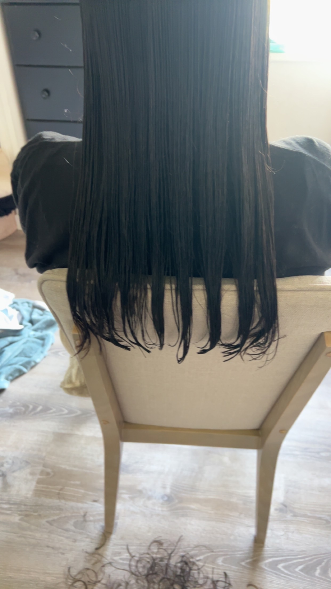

Long Styles

I create easy-to-follow long hairstyle tutorials by breaking each step down with clear instructions and visuals.
- Beach Waves
- Down Hairstyles
- Braids
Hair Cuts
I post clear and easy-to-follow tutorials on hair cuts to help others achieve the perfect cut at home.
- Hair Trims
- Layered Cuts
- Short Cuts
Updo Hairstyles

I share easy-to-follow hair trimming tutorials to help everyone achieve their desired look at home.
- Easy Buns
- Ponytails
Popular Hairstyles
Below are popular women's hairstyles in 2025 so far that will make you feel as confident as can be.
- Jawline Bob
- The jawline bob is a sharp, one length bob that grazes the jawline. If you can pull off this bold and confident look it would surely make you feel empowered and beautiful
- Bouncy Blowout
- This is a simple but beautiful hairstyle that you can achieve by blow-drying your hair and setting it in rollers and with pins to keep the rollers in place.
- Long Layers
- This is a classic yet subtle hairstyle that will always be popular. long layers with medium thick hair, you can never go wrong with long layers